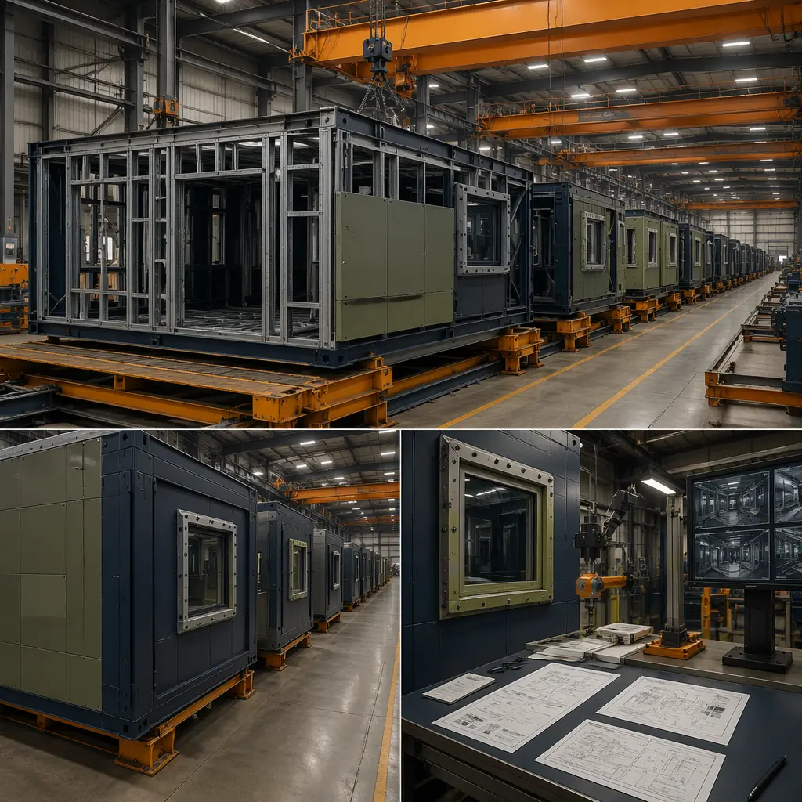
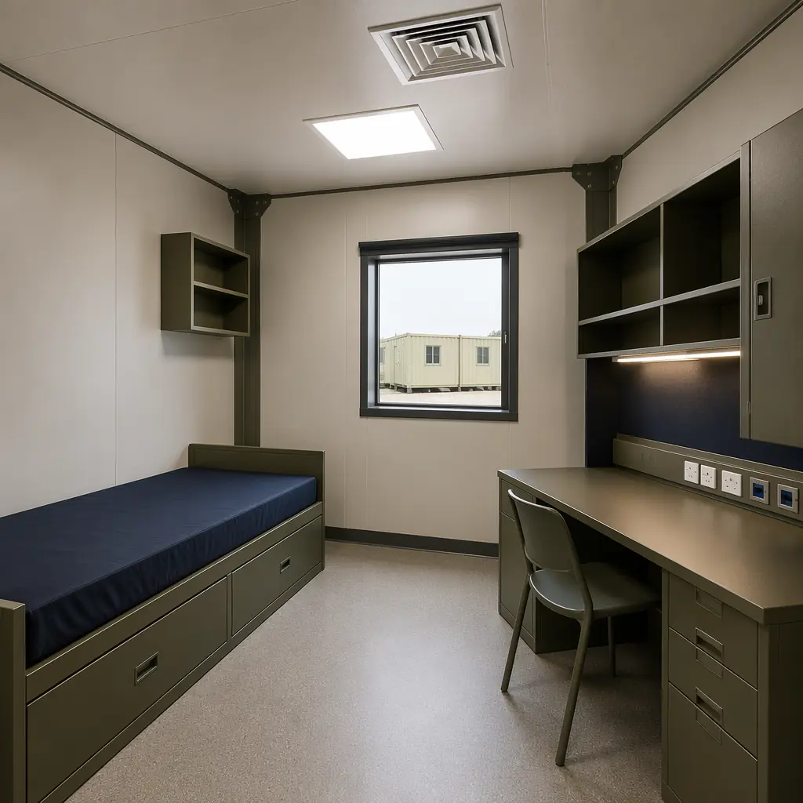
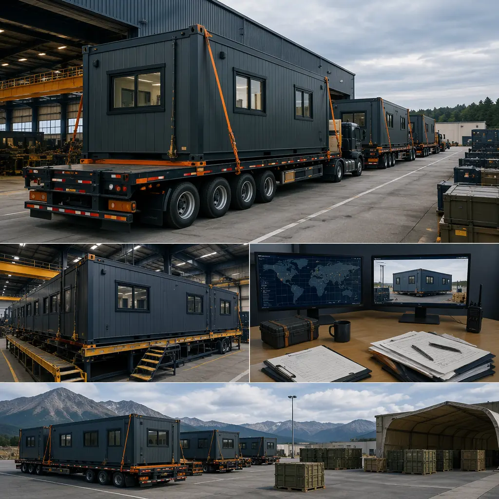

The US Department of Defense manages a $1.2 trillion real estate portfolio spanning 4,800 sites worldwide — and much of it is aging, undersized, or in the wrong location for current mission requirements. Traditional military construction (MILCON) projects take 5–7 years from congressional authorization to ribbon-cutting, a timeline fundamentally incompatible with rapid force posture changes in Eastern Europe, the Indo-Pacific, and the Middle East. Modular prefabricated construction — used extensively by the British Ministry of Defence, Australian Defence Force, and NATO forward-deployed units — is now gaining traction in US military procurement as a way to cut MILCON timelines by 60–70% while delivering buildings that meet Unified Facilities Criteria (UFC) requirements for structural performance, force protection, and lifecycle durability. This article examines the engineering, compliance, and deployment considerations that make modular construction viable for defense infrastructure at every level from garrison to forward operating base.

Why Military Procurement Is Turning to Modular: Speed, Standards, and Scalability
Military construction faces three constraints that modular methods address directly. First, schedule compression: a conventional 200-person barracks takes 18–24 months of on-site construction after design completion. A modular equivalent — with modules factory-built while site work proceeds — can be delivered in 8–12 months from contract award to occupancy. For a unit rotating into a previously unoccupied base or a forward-deployed force needing immediate housing, this timeline difference determines operational readiness.
Second, compliance complexity: military buildings must satisfy overlapping requirements from UFC documents (structural design per UFC 3-301-01, fire protection per UFC 3-600-01, antiterrorism per UFC 4-010-01), individual service-specific criteria (Army TI 809-series, Navy NAVFAC criteria, Air Force ETLs), and installation-specific design guides. Modular's factory-controlled production provides auditable quality records — material certifications, weld inspection reports, fire-rated assembly documentation — that satisfy the military's documentation requirements more systematically than site-built construction can match. MBI Permanent certification provides an additional third-party quality verification that military procurement officers increasingly recognize as equivalent to ISO 9001-based quality assurance programs.
Third, scalability and reconfigurability: military force structures change. A base that housed an infantry brigade company today may need to accommodate a cyber operations detachment in five years. Modular buildings can be disassembled, transported, and reconfigured — steel-framed modules unbolt at their inter-module connections, load onto flatbed trucks, and reassemble at a new location. Design for disassembly transforms military buildings from permanent sunk costs into relocatable assets. For expeditionary basing concepts like the US Marine Corps' Expeditionary Advanced Base Operations (EABO), this reconfigurability is a fundamental operational requirement, not a sustainability nicety.

UFC Compliance: Engineering Modular Buildings to Military Standards
The Unified Facilities Criteria (UFC) is the Department of Defense's building code — a comprehensive set of engineering, fire protection, security, and sustainability requirements that apply to all military construction regardless of delivery method. Modular buildings for military use must demonstrate UFC compliance through the same design documentation, calculation packages, and peer review as site-built structures. Key UFC requirements for modular military buildings include:
- UFC 3-301-01: Structural Engineering. Requires design to ASCE 7 minimum loads with additional military-specific requirements: occupancy loads for barracks (40 psf live load minimum, compared to 30 psf for commercial residential), equipment loads for communication rooms and armories (150 psf minimum in designated areas), and progressive collapse resistance per UFC 4-023-03 for buildings over three stories. Modular steel moment frames with factory-welded connections provide the redundant load paths progressive collapse analysis requires — a structural characteristic that site-built steel with bolted field connections must achieve through additional detailing. Seismic design requirements apply to all military buildings in SDC D and above.
- UFC 4-010-01: Antiterrorism (AT/FP) Standards. Mandates standoff distances, blast-resistant glazing, and structural hardening for inhabited buildings based on the installation's force protection condition. Modular buildings can be factory-equipped with laminated glass windows meeting ASTM F1642 blast resistance criteria, reinforced wall panels achieving the required blast pressure resistance, and structural connections designed for the reversal forces generated by blast loading. Factory installation of these elements — rather than field retrofitting after construction — ensures consistent quality across every opening and connection point.
- UFC 3-600-01: Fire Protection Engineering. Requires automatic sprinkler systems per NFPA 13, fire alarm systems per NFPA 72, and fire-rated construction per IBC Chapter 7. Modular factory production allows MEP rough-in — including sprinkler piping, alarm conduit, and firestopping at module boundaries — to be completed under factory QC before modules ship to site. Fire safety in modular construction covers the relevant testing and compliance pathways.
For military procurement officers evaluating modular proposals, the critical question is whether the manufacturer can produce a complete UFC compliance documentation package — PE-stamped structural calculations, fire protection engineering report, AT/FP analysis, and material certification records — not just a building that meets the visual specifications. Our RFP procurement guide includes military-specific proposal evaluation criteria.

Building Types: From Barracks to Battalion Headquarters
Modular construction is suitable for the full range of military building types, with specific design considerations for each:
| Facility Type | Module Configuration | Key Requirements | Modular Advantage |
|---|---|---|---|
| Unaccompanied Housing (Barracks) | 12×40 ft modules, 2–4 per floor, stacked 2–3 stories | UFC 4-721-01, 1+1 room configuration, AT/FP standoff | Factory-installed MEP in every room, consistent quality across 200+ identical modules |
| Company Operations Facility | 12×60 ft modules, open-span ground floor, offices above | UFC 4-730-03, secure areas, arms room (UFC 4-022-03) | Ballistic hardening factory-integrated into wall panels; secure room construction under factory QC |
| Dining Facility (DFAC) | Wide-span modules 16×60 ft, single-story | UFC 4-722-01, commercial kitchen MEP, 300–800 person capacity | Kitchen MEP pre-installed and pressure-tested in factory; eliminates 8-week field MEP installation |
| Medical/Dental Clinic | 12×40 ft modules with specialized MEP | UFC 4-510-01, medical gas systems, negative pressure isolation rooms | Medical gas piping factory-installed and certified; clean environment assembly reduces infection control risk |
| Headquarters/Admin Building | 12×60 ft modules, stacked 2–4 stories | SCIF compatibility (ICD 705), secure communications infrastructure | Factory-installed conduit pathways for classified networks; RF shielding integrated during module assembly |
| Vehicle Maintenance Shop | Wide-span 20×60 ft steel modules | UFC 4-740-02, overhead crane support, hazmat containment | Factory-engineered crane rail supports with documented weld procedures; epoxy floor installed under controlled conditions |
| Forward Operating Base (FOB) Modules | 8×20 ft ISO-compatible modules, single units to clusters | C-130/C-17 transportability, 72-hour assembly, no foundation required | Pre-wired, pre-plumbed units deploy by air; bolt-together assembly with hand tools; operational within 72 hours of landing |
Government and municipal construction shares many procurement and compliance pathways with defense projects. Law enforcement facilities and fire stations face similar security and rapid-deployment requirements at municipal scale.
Expeditionary Construction: Modular for Forward-Deployed Forces
The most demanding military construction scenario is expeditionary: buildings must be transportable by military aircraft, assembled with minimal equipment in austere locations, and operational within days of arrival — all while meeting the same force protection and habitability standards as permanent base construction. Modular construction addresses expeditionary requirements through standardized, transport-optimized module designs:
- C-130/C-17 transport compatibility. Modules are designed to fit within the cargo envelope of military transport aircraft: 8 ft wide × 8.5 ft tall × 20 ft long for C-130J-30, up to 12 ft wide × 12 ft tall × 60 ft long for C-17 Globemaster III. Module weight, including factory-installed interiors and MEP, is engineered to stay under the aircraft's floor loading limits (typically 300 psf for C-17) and the 60,000 lb single-pallet limit.
- No-foundation deployment. Expeditionary modules are designed for placement on compacted gravel pads or adjustable steel jack-stand systems — no concrete foundation required. The module's structural frame distributes loads to six adjustable support points, each with 12 inches of height adjustability to accommodate uneven terrain. This eliminates the 2–4 week foundation curing wait that dominates traditional expeditionary construction timelines.
- Hand-tool assembly. Module-to-module connections use captured-bolt systems that require only socket wrenches and torque wrenches for assembly — no welding, no crane (for single-story configurations; a rough-terrain forklift or small mobile crane handles module positioning). A 12-module barracks (housing 48 personnel) can be assembled by a 12-person engineer team in 72 hours from module delivery to operational handover.
Disaster relief housing and remote workforce housing share expeditionary deployment characteristics and can inform military procurement strategies. Cross-border logistics covers the customs, transportation, and compliance considerations for international military construction projects.

Force Protection Integration: Hardening Modular Structures
Military buildings must resist threats that commercial buildings never face: vehicle-borne improvised explosive devices (VBIEDs) at standoff distances, small arms fire, and forced entry attempts. Modular construction integrates force protection measures during factory assembly rather than adding them as field modifications:
- Blast-resistant wall panels. Exterior wall panels can be factory-fabricated with multiple layers of blast-resistant materials: an outer steel facing (10–12 gauge), a structural steel stud cavity filled with spray-applied polyurea (providing both blast energy absorption and waterproofing), and an interior layer of gypsum board on resilient channels. This assembly has been tested to resist ASTM F2247 blast loads at 50 psi·ms impulse — equivalent to a 500-lb TNT equivalent at 50 ft standoff distance.
- Forced-entry/ballistic-resistant (FE/BR) glazing. Windows are factory-glazed with laminated glass-clad polycarbonate makeups tested to UL 752 Level 3 (handguns up to .44 Magnum) or Level 5 (7.62mm rifle) depending on the installation's Design Basis Threat. The glazing is set in factory-welded steel frames with continuous structural silicone adhesion — eliminating the field-glazing quality variation that creates blast-failure vulnerabilities at window perimeters.
- Hardened module connections. Inter-module connections at the building perimeter are designed with continuous steel splice plates that transfer blast pressure from the exterior wall to the diaphragm, preventing the wall panel from separating from the structural frame under blast loading. These connections are tested at full scale in factory conditions, with documented load-deflection curves submitted as part of the AT/FP compliance package.
For Sensitive Compartmented Information Facilities (SCIFs) built within modular buildings, the factory environment enables RF shielding installation (copper mesh or conductive paint systems) with documented continuity testing at every seam and penetration — a level of quality assurance that field-installed SCIF shielding cannot match. Building envelope systems and structural warranties provide additional quality assurance layers for defense clients.
The Department of Defense's $24 billion annual military construction budget is increasingly directed toward modular procurement pathways because the math is unambiguous: a modular barracks delivered in 12 months at 85% of the cost of a site-built equivalent that takes 24 months is a 2× improvement in both schedule and capital efficiency. For program managers facing congressional pressure to demonstrate faster MILCON delivery, modular construction is transitioning from an experimental alternative to an acquisition strategy default.
Procurement Pathways: How to Buy Modular for Military Projects
Military modular construction can be procured through several established pathways, each with different timeline and compliance implications:
- Design-Build MILCON Transformation. The standard MILCON process uses design-bid-build with separate design and construction contracts. A design-build approach — where the modular manufacturer is part of the design-build team from concept stage — can reduce total project delivery time by 40–50% compared to design-bid-build. The US Army Corps of Engineers has executed multiple modular design-build MILCON projects under the Military Construction Transformation model, with barracks and administrative facilities as the primary building types.
- Multiple Award Task Order Contract (MATOC). Pre-qualified modular construction contractors compete for individual task orders under a MATOC vehicle, reducing procurement lead time from 12–18 months (full and open competition) to 3–6 months (task order competition among pre-qualified firms). The Naval Facilities Engineering Command (NAVFAC) and USACE both maintain MATOC vehicles that include modular construction as an approved delivery method.
- Other Transaction Authority (OTA). For rapid prototyping and expeditionary requirements, OTAs allow the Department of Defense to bypass FAR-based procurement entirely. Modular construction for forward-deployed forces — where the requirement is a building system, not a specific building design — fits well within OTA scope. The Defense Innovation Unit (DIU) has issued multiple OTAs for modular and expeditionary construction systems.
For manufacturers and developers entering the defense construction market, the most important early investment is compliance documentation infrastructure — the ability to produce UFC-compliant design packages, material certifications, and quality control records that meet federal acquisition audit requirements. This is not a building capability question; it is a documentation and process question, and it is where most first-time defense contractors stumble. Our partner evaluation guide includes defense-specific qualification criteria. For related infrastructure, see correctional facilities and data center construction for secure facility types with overlapping compliance requirements.